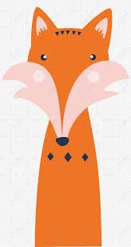

Hyperblog Tu blog de muchisisisismas confianza
Este es el título atractivo e interesante del post
Y este es el párrafo de inicio dónde vamos a explicar las cosas increíbles que se pueden hacer con las ramas.
Creo que totalmente esta es la mejor forma de darse cuenta cómo funciona un checkout. Además, creo que el back es mejor que el front y la queso.

Suscríbete y dale like. Agregamos una tilde.